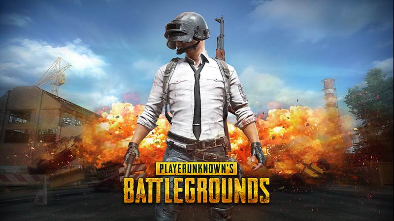

Hobby
Hobby is a recreational activity that is done in free time
to remember one's thoughts. Meanwhile, according
to the Big Indonesian Dictionary, Hobbies are nouns
that can be interpreted as hobbies; a special pleasure
in leisure time, not as a main job.
Some of my hobbies are :
Playing Games
With the development of the times, now there are
many types of games. Not only the type, the number
of people who have a hobby of playing games is also
increasing. In playing the game, strategy is the main
key to finish the game. So don't be surprised, if this
hobby becomes one of the hobbies that can increase
brain intelligence. In addition, there are several
majors that can accommodate game playing skills.
Such as Visual Communication Design, Animation, to
Informatics Engineering. I also have a hobby of
playing games, I play several mobile games, namely:
Mobile Legends

Mobile Legends: Bang Bang or ML is a MOBA game released by Moontoon.
This game can be played on both Android and IOS phones. In this MOBA
game there will be 10 players who will be divided into 2 teams. The
rules of the game are 5 vs 5. The average game in 1 game is about 15-20
minutes. Each player can choose 1 hero from dozens of available hero lists.
PUBG Mobile

PUBG Mobile is a battle royale game designed by Brendan Greene. The
game was officially released globally in March 2018. Basically, PUBG
has three different versions based on the playing platform. In this Battle
Royale genre game, players will be presented with a very thrilling gameplay.
All players will fight each other until only one player wins this battle. PUBG
Mobile can be said to be a phenomenal game. How not, more than 200 million
downloads recorded after a year was released. This shows that the market
response is very good for this one game.
Sport
Exercise is a common thing and is often done every day.
Physical activity is often even associated with health.
Not only useful for physical health, exercise is also
said to improve a person's overall quality of life.
Futsal
Futsal is a ball game played by two teams, each consisting of five people.
The goal is to get the ball into the opponent's goal, by manipulating the
ball with the feet. In addition to the main five players, each team is also
allowed to have a reserve player. Unlike other indoor soccer games, the futsal
field is lined, not a net or a board.